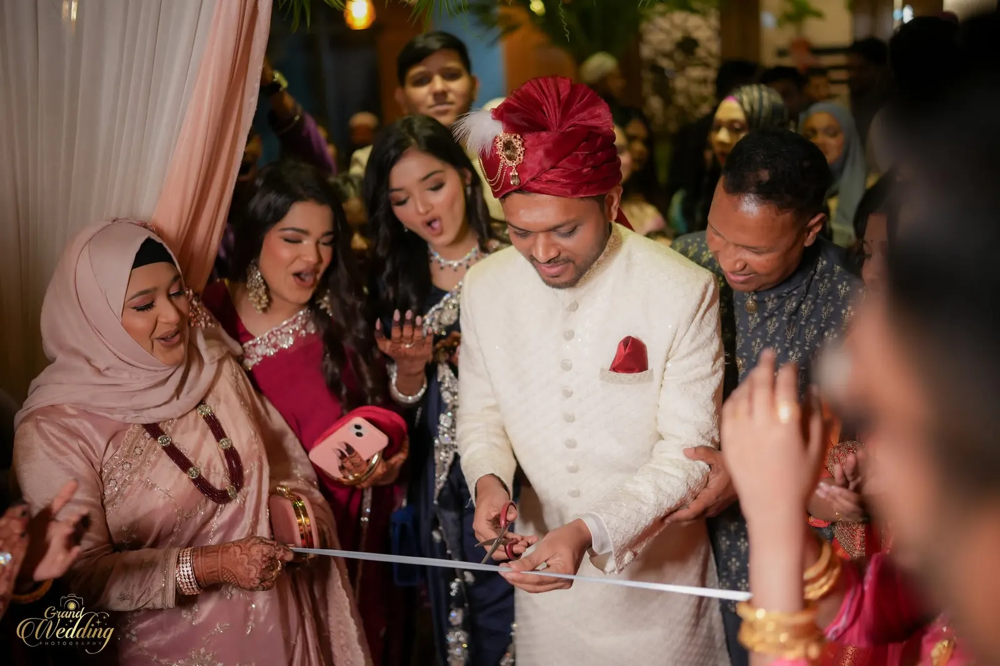
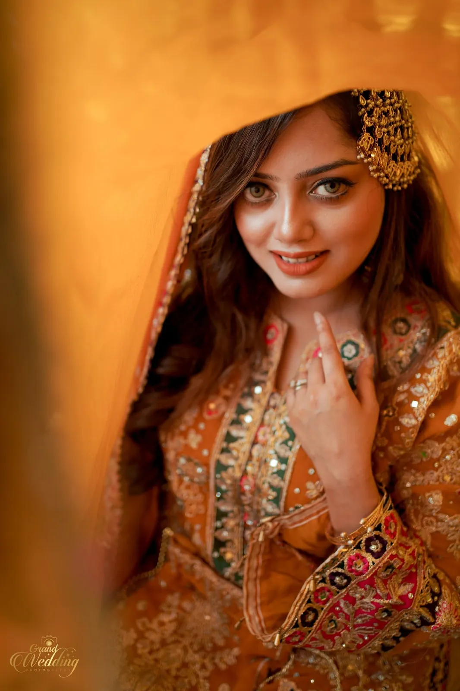

01
People first
The frame matters, but the expression matters more. Portrait direction should help people look comfortable rather than over-posed.

About Grand Wedding
Grand Wedding Photography is a Dhaka-based wedding photography and cinematography brand built around portraits, real moments and a consistent visual story.

Our point of view
We like clean composition and intentional portraits, but weddings are not studio sessions. The people, the movement and the unexpected moments matter just as much as the frame itself.
That is why the portfolio is presented in sequences: a celebration makes more sense when you can see how the story was handled from beginning to end.
How we think
These are creative principles, not inflated promises or made-up statistics.
The frame matters, but the expression matters more. Portrait direction should help people look comfortable rather than over-posed.
A full wedding story needs establishing frames, details, family, portraits and transitions—not one visual trick repeated all day.
When both services are booked, the visual tone should feel connected so the final delivery reads like one body of work.
See the work
The website includes the complete supplied image set, organised into visual stories with a full archive as well.